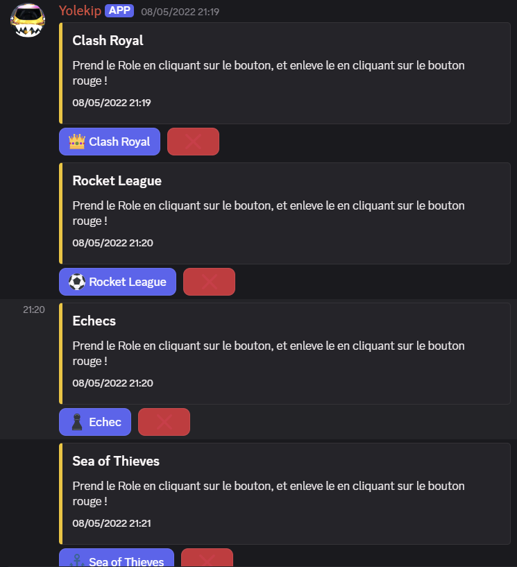
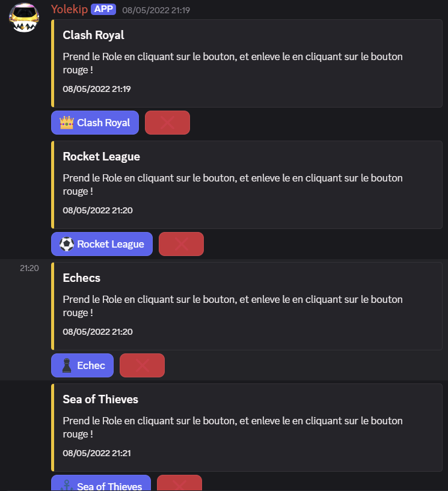

SAE 21
Simuler un réseau privé d'une entreprise sur Packet Tracer
- 🎯 Objectif / Problème à résoudre
- Appliquer toutes les règles de sécurité et faire communiquer les bonnes machines.
- 🛠️ Action
-
- Créer le bon plan d'adressage IP.
- Créer le réseau.
- Configurer le Firewall.
- 💻 Technos utilisées
- Packet Tracer, CISCO, SWITCHS, ROUTEURS, VLANs, DHCP, DNS, STP et Firewall
- 📅 Lien de téléchargement :
- 📂 Télécharger le fichier .pkt
 
